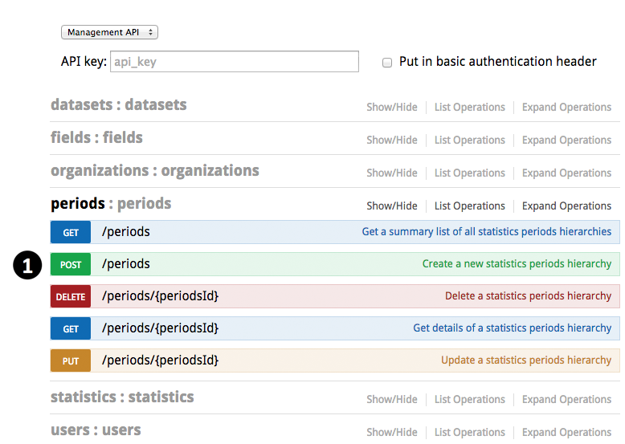
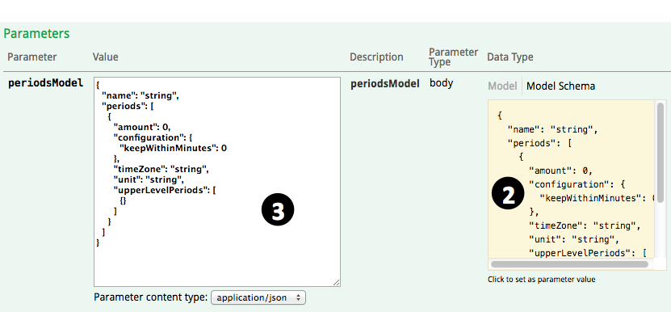
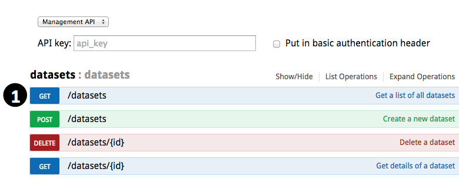
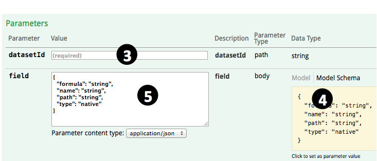
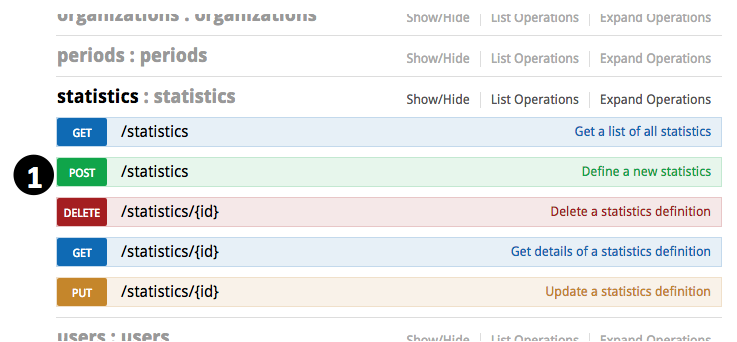
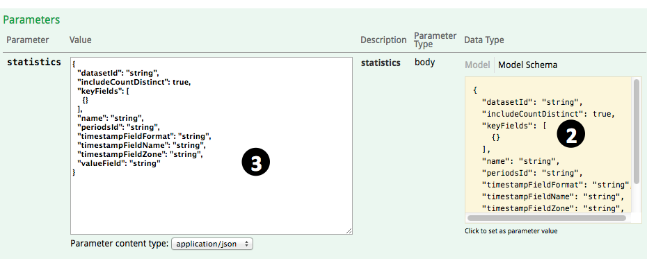
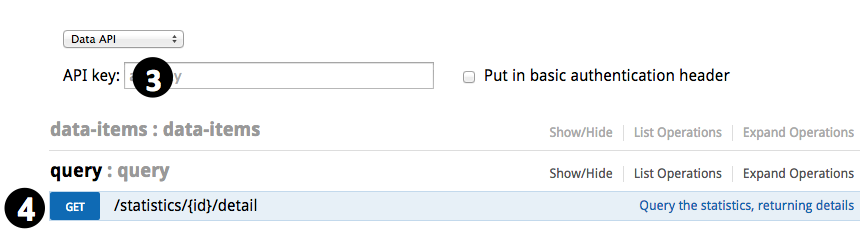
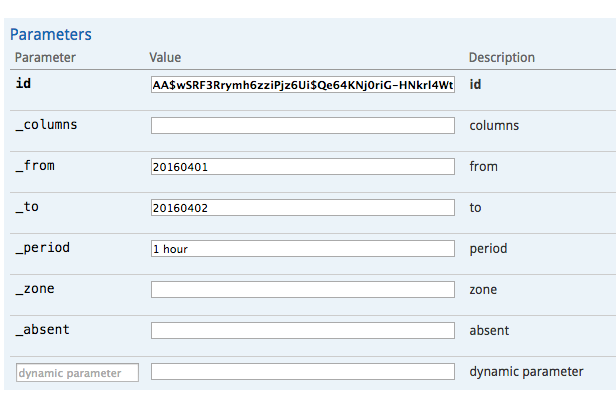

How to setup real-time statistics in 5 minutes
With rtstatistics.com，you can define datasets, and send your data in real-time to your datasets in the cloud. You probably have already tried the steps documented in How to send data to rtstatistics.com in 5 minutes. Now let’s try to define statistics for your datasets.
Statistics are based on datasets. A dataset can have any number of statistics defined. A statistics is actually the definition of these based on a dataset:
- Do statistics on what – for example, order amount, mobile short message content, media play count, etc.
- What kind of statistics – for example, average order amount, total order amount, minimal amount in a single order, maximal amount in a single order; Or number of distinct short message content.
- Do separate statistics by what – For example, by store id, by combination of sender city and receiver city, or just by nothing which means an overall statistics is sufficient.
- Aggregate by what time period – For example, aggregate per 5 minutes, per 1 hour, or per 1 day, etc.
After the statistics is defined, the result of the statistics can be queried by these criteria:
- Category – for example, id of the store, or combination of two cities – one as the sender city and other as the receiver city.
- Aggregation period – for example, 1 hour.
- Start and end time – for specifying the time period that the original data must fall into
- Type of statistics to be returned – combination of the total, the maximum, etc.
Statistics done by rtstatistics.com is real-time. For example, if a new order with amount 100 is received at 8:23:34PM, and you do a query at 8:23:35PM, you should be able to notice that the total order amount has at least a 100 increment.
Setting up a statistics involves the following activities:
- define the aggregation period hierarchy, or choose an existing aggregation period hierarchy that you have already defined
- define fields for your detaset, or use existing fields that you have already defined
- choose which fields to be used for categorizing, and which field to be used to for statistics
Step 1: Define the aggregation period hierarchy
It is called a hierarchy because you can put multiple aggregation periods together. For example, “every 15 minutes” and “every 1 hour” can be defined in one aggregation period hierarchy, so that if you need the statistics to be aggregated by both these periods, you just need to define a statistics referring to a single aggregation period hierarchy, you don’t need to define two statistics.
An aggregation period hierarchy does not need to belong to a single statistics or dataset. Once defined, it can be referred by more than one statistics, and those statistics can be based on different datasets as well.
- Go to https://manage.rtstatistics.com/ and log in, in Management API, expand “periods”, click on “POST /periods”

- Scroll down and click on the “Model Schema” content on the right to have the sample value copied to parameter value input area

- Modify the parameter value according to you needs:
- name – name of the aggregation period hierarchy, for example, “per 1 hour”, “per 15 minutes”, ” per 15 minutes and per 1 hour”.
- periods – this is an array or aggregation periods, each aggregation period can have the following fields:
- amount – can be any positive number such like 1, 15, etc.
- unit – unit of the period, for example “minute”，”hour”, “day”, “month”, “year”. You can add a “s” to the end if you like.
- timeZone – time zone that will be used for interpreting the time used in aggregation, for example, “UTC”, “Australia/Melbourne”. For the full list of supported time zones, please see Supported time zones.
- keepWithinMinutes – how long should the statistics results to be kept, for example, use 43200 for 30 days, 129600 for 90 days, 1025280 for 2 years.
- upperLevelPeriods is not supported for now, you can just delete it, and don’t forget the delete the previous comma “,” as well. Or, you can also just delete “{}” to make the array empty.
- Click on the “Try it out!” button
- Scroll down to see the response. You should be able to see the generated ID for this new aggregation period hierarchy. Select and copy it, we need to use it later.
Step 2: Define fields
Fields for statistics can be of these kinds:
- native – fields that can be mapped directly to a field in the received data
- calculated – fields that are calculated through formulas using fields in the received data
For example, if we have data received like this:
{"header":"this is a header", "body":{"content":"this is the content", "remark":"this is the remark"}, "size"=999, "sequence"=3}
We can define fields like these:
| Name | Type | Definition | Value |
|---|---|---|---|
| header | native | header | “this is a header” |
| size | native | size | 999 |
| content | native | body.content | “this is the content” |
| remark | native | body.remark | “this is the remark” |
| hasWordThisInContent | calculated | body.content.contains(“this”) | true |
| hasWordThatInContentOrRemark | calculated | body.content.contains(“that”) || body.remark.contains(“that”) | false |
| sizePlusSequence | calculated | size + sequence | 1002 |
- Find the ID of your dataset. If you haven’t copied it so somewhere, you can try to find it in the list of all your datasets. Expand”datasets”, go to “GET /datasets”, ”，click on the “Try it out!” button, then you will see all your datasets in the returned result below.

- Expand “fields”, go to “POST /datasets/{datasetId}/fields”

- Input the ID of the dataset

- Scroll down and click on the “Model Schema” content on the right to have the sample value copied to parameter value input area
- Modify the parameter value according to how you want the fields to be defined
- name – name of the field. It must start with a letter and contains only letters of numbers.
- path or formula – Only one of them is required. For native fields, keep path; for calculated fields, keep formula.
- type – can be “native” or “calculated”. It can also be left out – fields with path are considered to be native while fields with formula are considered to be calculated.
- If the field is native, and has the same name as path, then the definition can be simplified as:
{"name": "myFieldName"} - If the field is calculated, since the type can be left out, the definition can be simplified as:
{"name": "myCalculatedField", "formular":"body.remark.contains(\"that\")"}
- Click on the “Try it out!” button
- Scroll down to see the response. If there is no error message then the field had been created successfully.
- You can repeat the steps above to create more fields if you like. Creating a calculated field for a constant value is allowed, but normally you don’t need to, constant values can be used directly when defining statistics.
Step 3: Define statistics
Before defining the statistics, you need to know the ID of the dataset, ID of the aggregation period hierarchy, and names of the fields you want to use in the statistics.
- Expand “statistics”, go to “POST /statistics”

- Scroll down and click on the “Model Schema” content on the right to have the sample value copied to parameter value input area

- Input parameter values according to how you want the statistics to be defined:
- name – name of the statistics
- datasetId – ID of the dataset that the statistics is based on
- periodsId – ID of the aggregation period hierarchy that applies to the statistics
- valueField – name of the field that will be used as the subject of the statistics. You can also use a number constant here, for example “1”
- includeCountDistinct – can be either “true” or “false” meaning that whether number of unique values in the value field need to be included in the statistics. For example, if there are 5 data items with the firstName field as the value field, and the values of firstName field in these 5 data items are “Alice”, “Bob”, “Clark”, “Alice”, “Bob”, in this case the number of unique values is 3.
- It does not matter if includeCountDistinct is “true” or “false”, as long as the value of the value field is a number, count, summary, maximum, minimum, and average are always included in the statistics.
- When includeCountDistinct is “true”, if the value of the value field is not number，besides the number of unique values, count statistics will also be available.
- keyFields – if you don’t need to categorize the statistics, this can be deleted，or you can just delete “{}” to make it an empty array. If you need to categorize the statistics, you can specify the fields to be used for determine which category the data falls into. For example:
["shopId", "category"]means data will be categorized by the combination of values from shopId and category fields[["firstSalespersonId", "secondSalespersonId"], "category"]means data will be categorized by the combination of values from (firstSalespersonId or secondSalespersonId) and category fields. In this case, the amount of an order will be put in both salesperson’s name separately. Whether you query using the first sales person’s ID or the second sales person’s ID, you the amount of the order will always be included in the result. If firstSalespersonId and secondSalespersonId in the received data are the same, the amount won’t be double counted for that person.
- timestampFieldName – name of the field that the timestamp value should be retrieved. If not specified, you can just delete it, and the time that the data item is received will be used. The timestamp is used to do aggregation according to the aggregation period.
- timestampFieldFormat – format of the timestamp field. You can delete it if you don’t specify a timestamp field. When specified, its value can be:
- Date time format pattern, for example”yyyyMMdd”, “yyyyMMdd:HHmm”. In this case the value of the timestamp field should be a string and will be parsed with the pattern you specified. For details about date time format pattern, please see Date time patterns.
- “EPOCH_MILLIS”, in this case the value of the timestamp field should be a number, representing the milliseconds since UNIX epoch (00:00:00 Coordinated Universal Time (UTC), Thursday, 1 January 1970)
- “EPOCH_SECONDS”, in this case the value of the timestamp field should be a number, representing the seconds since UNIX epoch (00:00:00 Coordinated Universal Time (UTC), Thursday, 1 January 1970)
- timestampFieldZone – time zone of the timestamp, for example, “UTC”, “Australia/Melbourne”. For the full list of supported time zones, please see Supported time zones. You can delete it if you don’t specify a timestamp field.
- Click on the “Try it out!” button
- Scroll down to see the response. You should be able to see the generated ID of the newly created statistics. Select and copy it, you will need it later for doing query.
- You may repeat the above steps to create more statistics
Step 4: Query the statistics results
Statistics results are only generated after definition of statistics is saved. Data items received before statistics definition is saved will not be processed. In order to get statistics results through query, you need to ensure that there are data items received after you saved the statistics definition.
- Find the query key of the dataset. For detailed steps please see “Step 3: Get the API Keys of the Dataset” in Tutorial: How to send data to rtstatistics.com in 5 minutes.
- Open https://api.rtstatistics.com/ in the browser
- Use one of the query keys as API key

- Expand “query”, go to “GET /statistics/{id}/detail”
- Specify query criteria:
- id – ID of the statistics
- _columns – for specifying types of statistics results. If it is “all” or left blank, then all available types of statistics results will be returned. It can be a combination (separated by comma or space) of the following:
- count – include number of values evaluated
- sum – include summary/total of evaluated values if they are numbers or strings representing numbers
- avg – include average of evaluated values if they are numbers or strings representing numbers
- min – include minimal value among evaluated values if they are numbers or strings representing numbers
- max – include maximal value among evaluated values if they are numbers or strings representing numbers
- unique – include number of unique/distinct values evaluated
- estimated – include an indicator on whether number of unique values is accurate or estimated. Normally when number of unique values is small, it is accurate, when it gets large, it is estimated.
- values – include unique values if the number of unique values is accurate
- _from – time in “yyyyMMddHHmm” or “yyyyMMddHH” or “yyyyMMdd” or “yyyyMM” format, meaning that only statistics of data items at or after this time should be included.
- _to – time in “yyyyMMddHHmm” or “yyyyMMddHH” or “yyyyMMdd” or “yyyyMM” format, meaning that only statistics of data items before this time should be included.
- _period – aggregation period. For example, “1 hour”, “5 minutes”, “10 hour”. A trailing “s” can be appended if you like. If there is only one aggregation period in the aggregation period hierarchy then you don’t have to specify it.
- _zone – time zone of the aggregation period. If there is only one aggregation period as specified by _period in the aggregation period hierarchy, you don’t have to specify the time zone.
- _absent – can be “empty” or omitted. If it is “empty” then the categorization key fields without value specified will have an empty string value, otherwise, they will have a null value.
- dynamic parameters – names and values of the categorization key fields. They can be mapped to the fields you specified in keyFields when you define the statistics. For example, if the keyFields is defined as
["shopId", "category"], then you can add two dynamic parameters here – shopId and category, if you specify their values as “100” and “shoes” respectively, the statistics results will be those for the combination of shopId equals “100” and category equals “shoes”.
Done!
Now, you have successfully created real-time statistics, and you have got query results. Quite easy, isn’t it?
If there is any issue or question, feel free to send to support@rtstatistics.com.